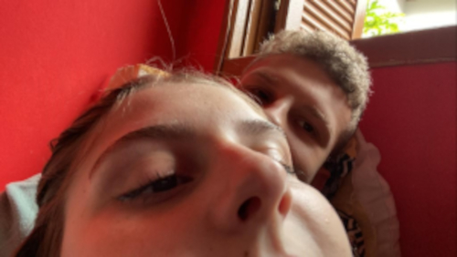
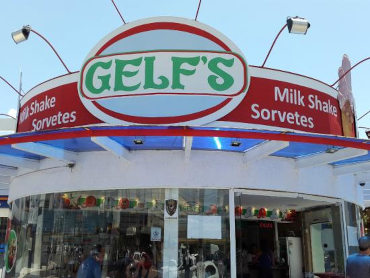
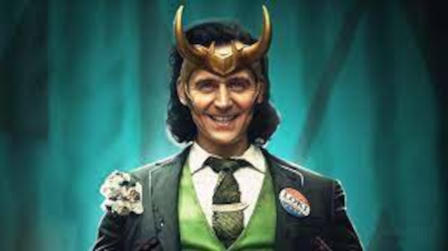
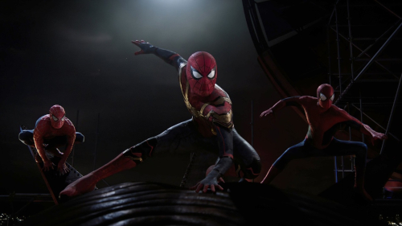
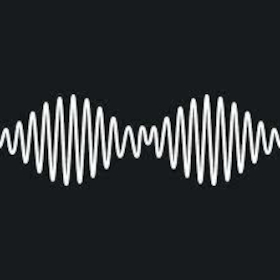
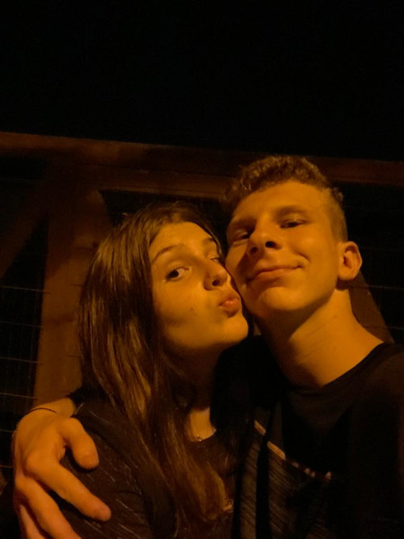

Site sobre nós
Quem somos nós?
Somos compostos por 2, mas feitos para ser 1 só.
Heloisa Arrieche Barenho
Nascida em 22/08/2006, ela é uma garota exemplar (mas não confunda com a do filme), sabe cozinhar (não confunda essa frase com machismo), dobrar roupa (ta okay talvez esteja sendo mesmo). Tem uma voz que percorre por seus ouvidos como uma sinfonia de bethoven, uma beleza exbragavante e uma inteligencia fora do normal, que, se ela quer fazer algo, ela vai lá e faz, da forma mais linda e correta póssivel, mas não ouse fazer com ela achando que vai mandar no trabalho, pois é só ela que manda. Um humor pesado e as vezes quebrado, com uma sinceridade unica e timidez aparente em certos momentos, assim como ela possui grandes peitos, possui um grande coração, é uma pessoa maravilhosa, só não digo que na vida todos precisam de uma Heloisa, porque ela é unica quero ela só para mim.
João Miguel Oliveira dos Santos
Nascido em 18/03/2005, João tem a melhor qualidade de namorar a garota que descrevi ali em cima.
Como se conhecemos?
O ano era de 2017 e Heloisa chama o João Miguel, na época ""jm" pelo WhatsApp após aparentemente pedir contatos de guris para seu colega. Trocaram certas mensagens, mas foram apenas conhecidos.
O real encontro
Em 2018, um rolê aleatorio, onde "jm" saiu pois estava afim de tomar um milkshake da sorveteria gluts, ele foi parar na saída do turno da tarde da escola Luiz Moschetti, onde até hoje, Helo estuda.
No mesmo dia, jm saiu do moschetti para ir até a gelfs e quando voltou a escola, Helo pediu um gole, porém jm não sabia que esse gole seria seus 10 reais inteiros...
O verdadeiro encontro
Eles nunca realmente foram proximos ou conversavam, mas sempre tinham um o contato do outro e jm sempre queria Helo, enquanto Helo escutava sadstaion iludindo o pobre menino. Até que em 2021, o ano em que a Marvel lança muitas séries em "sua" plataforma disney+, quando a série Loki é lançada, jm ataca e conquista a atenção de Heloisa, onde no 3º episodio ele mandou uma mensagem em seus storys (que tinha nada a ver com marvel) perguntando se Helo já tinha assistido o episodio... Então depois de algumas horas eles começam a conversar pelo Wpp e...
Começo da melhor escolha de nossas vidas
Sem forçarem, eles vão conversando dia a dia, trocando todos dias mensagens, onde era 80% sobre Marvel e 20% sobre a vida, mas depois de algumas semaninhas Helo começaria na academia e então seria 5% de academia. Onde meses depois, João também começaria só para puxar papo e conquistar o coração de Helo.
With great power...
O que aproximou eles, foram eles, mas não há como negar nessa história que Peter Parker os aproximou mais e mais, os impedindo de se afastarem, na verdade são OS Peter Parkes, pois todos os dias, ambos conversavam sobre o novo filme do cabeça de teia, onde existia milhares de rumores, vazamentos e etc de que nesse filme teria os 3 homens aranha do cinema, sendo o maior evento do cinema caso aquilo acontecesse, e aconteceu, o que até hoje é dificil de acreditar, imagine para aqueles dois adolescentes, certamente, aquela foi a melhor época da minha vida, obrigado Peter.
O ano em que o café ficou quente
Este foi o ano em que ambos estavam começando a ver que aquilo não era só conversas diarias, que aquela amizade não era algo pequeno, 2022 foi o ano em que eles começaram a sentir algo um pelo o outro, mas adivinha... Nenhum dos dois sabia! Bem história de filme mesmo né. Mesmo assim a paixão e amizade aumentavam cada dia mais.
Até que em
Se você ver minha data, verá que sou pisciano, então sim, eu lembro da primeira vez que nos beijamos, foi dia 06/09/2022 e quase 1 semana depois, esses pombinhos finalmente se entregam um para o outro e tomam pelo para mim, a melhor decisão da minha vida... Hoje no dia que estou fazendo esse site, estamos em quase 8 meses já, 8 meses de pura feliciade e saudade.
Porém...
Obviamente, nada é perfeito, nem essa história desses pombinhos, pois isso foi beeem resumido, pois nessa história tem erros, falhas, decepções, dias sem se falar e etc... Ambos já se machucaram, mas isso não foi o suficiente, foi só para mostrar que o o amor entre eles é maior que tudo.
Amor
E falando em amor, foi isso que essa guria me mostrou, o que de fato é amor, amor não é só borboletas no estomago, amor está mais para um efeito borbeleta, onde uma coisinha, pode mudar tudo... Amor não é atração, é sensação e foi isso o que eles tiverem e tem até hoje, eles passaram por coisas ruins até chegar aqui, que mesmo assim, continuaram em frente pois sabiam que era o caminho certo, talvez eu não seja o suficiente para ela, mas eu a amo com todo meu coração e se der errado, a gente recomeça, se quebrar, a gente arruma, se não for, a gente faz ser. Para sempre a gente.